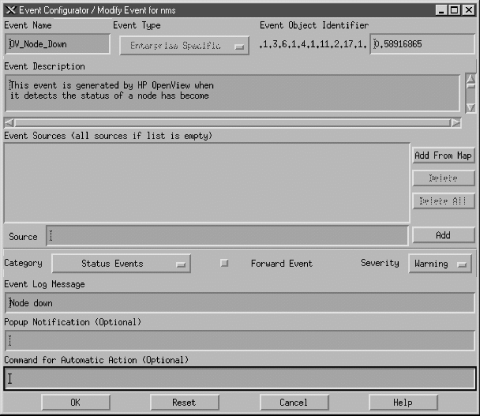
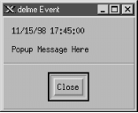
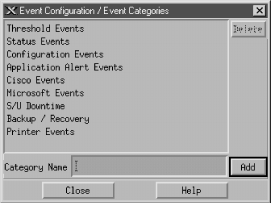
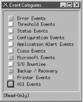
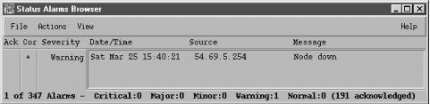
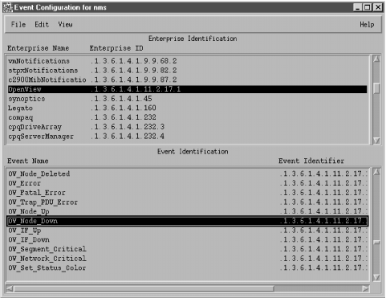
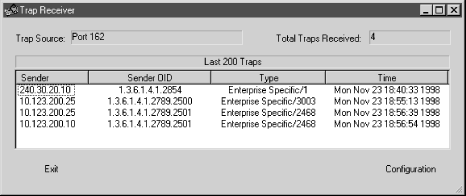

10.2. Receiving Traps
Let's
start by discussing how to deal with incoming traps. Handling
incoming traps is the responsibility of the NMS. Some NMSs do as
little as display the incoming traps to standard output
(stdout). However, an NMS server typically has
the ability to react to SNMP traps it receives. For example, when an
NMS receives a linkDown trap from a router, it
might respond to the event by paging the contact person, displaying a
pop-up message on a management console, or forwarding the event to
another NMS. This procedure is streamlined in commercial packages but
still can be achieved with freely available open source programs.
10.2.1. HP OpenView
OpenView
uses three pieces of software to receive and interpret traps:
-
ovtrapd (1M)
-
xnmtrap
-
xnmevents
OpenView's main trap-handling daemon
is called
ovtrapd. This program listens for
traps generated by devices on the network and hands them off to the
Postmaster daemon (
pmd ). In turn,
pmd triggers what OpenView calls an event.
Events can be configured to perform actions ranging from sending a
pop-up window to NNM users, forwarding the event to other NMSs, or
doing nothing at all. The configuration process uses
xnmtrap, the Event Configurations GUI. The
xnmevents program displays the events that have
arrived, sorting them into user-configurable categories.
OpenView
keeps a history of all the traps it has received; to retrieve that
history, use the command
$OV_BIN/ovdumpevents.
Older versions of OpenView kept an event logging file in
$OV_LOG/trapd.log. By default, this file rolls
over after it grows to 4 MB. It is then renamed
trapd.log.old and a new
trapd.log file is started. If you are having
problems with traps, either because you don't know whether they
are reaching the NMS or because your NMS is being bombarded by too
many events, you can use
tail -f to watch
trapd.log so you can see the traps as they
arrive. (You can also use
ovdumpevents to create
a new file.) To learn more about the format of this file, refer to
OpenView's manual pages for
trapd.conf (4)
and
ovdumpevents (1M).
It might be helpful to define what exactly an OpenView event is.
Think of it as a small record, similar to a database record. This
record defines which trap OpenView should watch out for. It further
defines what sort of action (send an email, page someone, etc.), if
any, should be performed.
10.2.2. Using NNM's Event Configurations
OpenView
uses an internal definition file to determine how to react to
particular situations. This definition file is maintained by the
xnmtrap program. We can start
xnmtrap by using the menu item "Options

Event Configurations" (on the NNM GUI) or by giving the
command
$OV_BIN/xnmtrap. In the Enterprise
Identification window, scroll down and click on the enterprise name
"OpenView .1.3.6.1.4.1.11.2.17.1." This displays a list
in the Event Identification window. Scroll down in this list until
you reach "OV_Node_Down." Double-click on this event to
bring up the Event Configurator (
Figure 10-1).

Figure 10-1. OpenView Event Configurator -- OV_Node_Down
Figure 10-1 shows the
OV_Node_Down event in the Event Configurator.
When this event gets triggered, it inserts an entry containing the
message "Node down," with a severity level of
"Warning," into the Status Events category. OpenView
likes to have a leading 0 (zero) in the Event Object Identifier,
which indicates that this is an event or trap -- there is no way
to change this value yourself. The number before the 0 is the
enterprise OID; the number after the 0 is the specific trap number,
in this case 58916865.
[42] Later we will use these numbers as
parameters when generating our own traps.
10.2.2.1. Selecting event sources
The Source option is useful when
you want to receive traps from certain nodes and ignore traps from
other nodes. For example, if you have a development router that
people are taking up and down all day, you probably would rather not
receive all the events generated by the router's activity. In
this case, you could use the Source field to list all the nodes from
which you would like to receive traps, and leave out the development
router. To do this, you can either type each of the hostnames by hand
and click "Add" after each one, or select each node
(using the Ctrl and mouse-click sequence) on your OpenView Network
Node Map and click "Add From Map." Unfortunately, the
resulting list isn't easy to manage. Even if you take the time
to add all the current routers to the Event Sources, you'll
eventually add a new router (or some other hardware you want to
manage). You then have to go back to
all your
events and add your new devices as sources. Newer versions of
OpenView allow you to use pattern matching and source files, making
it easier to tailor and maintain the source list.
10.2.2.2. Setting event categories
When
NNM receives an event, it sorts the event into an event category. The
Categories drop-down box lets you assign the event you're
configuring to a category. The list of available categories will
probably include the following predefined categories (you can
customize this list by adding categories specific to your network and
deleting categories, as we'll see later in this section):
-
Error events
-
Threshold
events
-
Status events
-
Configuration events
-
Application alert events
-
Don't log or display
-
Log only
The last two categories really aren't event categories in the
true sense of the word. If you select "Don't log or
display," OpenView will not save the event in its database and
will not display the Event Log Message in any Event Categories.
OpenView will display the Popup Notification in a pop-up window and
run the Command for Automatic Action. The "Log only"
option tells OpenView not to display the event but to keep a log of
the event in its database.
[43]
TIP:
Log
only" is useful if you have some events that are primarily
informational; you don't want to see them when they arrive, but
you would like to record them for future reference. The Cisco event
frDLCIStatusChange - .1.3.6.1.2.1.10.32.0.1 is a
good example of such an event. It tells us when a Virtual Circuit has
changed its operational state. If displayed, we will see
notifications whenever a node goes down and whenever a circuit
changes its operational state to down. This information is redundant
because we have already gotten a status event of "node
down" and a DLCI change.[44] With this event set to
"Log only" we can go to the log file only when we think
things are fishy.
10.2.2.3. Forwarding events and event severities
The
"Forward Event" radio button, once checked, allows you to
forward an event to other NMSs. This feature is useful if you have
multiple NMSs or a distributed network-management architecture. Say
that you are based in Atlanta, but your network has a management
station in New York in addition to the one on your desk. You
don't want to receive all of New York's events, but you
would like the
node_down information forwarded
to you. On New York's NMS, you could click "Forward
Event" and insert the IP address of your NMS in Atlanta. When
New York receives a
node_down event, it will
forward the event to Atlanta.
The Severity drop-down list assigns
a severity level to the event. OpenView supports six severity levels:
Unknown, Normal, Warning, Minor, Major, and Critical. The severity
levels are color-coded to make identification easier;
Table 10-1 shows the color associated with each severity
level. The levels are listed in order of increasing severity. For
example, an event with a severity level of Minor has a higher
precedence than an event with a severity of Warning.
Table 10-1. OpenView Severity Levels
|
Severity
|
Color
|
|
Unknown
|
Blue
|
|
Normal
|
Green
|
|
Warning
|
Cyan
|
|
Minor
|
Yellow
|
|
Major
|
Orange
|
|
Critical
|
Red
|
The colors are used
both on OpenView's maps and in the Event Categories. Parent
objects, which represent the starting point for a network, are
displayed in the color of the highest severity level associated with
any object underneath them.[45] For example, if an object represents a
network with 250 nodes and one of those nodes is down (a Critical
severity), the object will be colored red, regardless of how many
nodes are up and functioning normally. The term for how OpenView
displays colors in relation to objects is status source
; it is explained in more detail in Chapter 6, "Configuring Your NMS".
10.2.2.4. Log messages, notifications, and automatic actions
Returning
to
Figure 10-1, the Event Log Message and Popup
Notification fields are similar, but serve different purposes. The
Event Log Message is displayed when you view the Event Categories and
select a category from the drop-down list. The Popup Notification,
which is optional, displays its message in a window that appears on
any server running OpenView's NNM.
Figure 10-2
shows a typical pop-up message. The event name,
delme in this case, appears in the title bar.
The time and date at which the event occurred are followed by the
event message, "Popup Message Here." To create a pop-up
message like this, insert "Popup Message Here" in the
Popup Notification section of the Event Configurator. Every time the
event is called, a pop-up will appear.

Figure 10-2. OpenView pop-up message
The last section of the Event
Configurator is the Command for Automatic Action. The automatic
action allows you to specify a Unix command or script to execute when
OpenView receives an event. You can run multiple commands by
separating them with a semicolon, much as you would in a Unix shell.
When configuring an automatic action, remember that
rsh can be very useful. I like to use
rsh sunserver1 audioplay -v50
/opt/local/sounds/siren.au, which causes a siren audio file
to play. The automatic action can range from touching a file to
opening a trouble ticket.
In
each Event Log Message, Popup Notification, and Command for Automatic
Action, special variables can help you identify the values from your
traps or events. These variables provide the user with additional
information about the event. Here are some of the variables you can
use; the online help has a complete list:
- $1
-
Print the first passed attribute (i.e., the value of the first
variable binding) from the trap.
- $2
-
Print the second passed attribute.
- $n
-
Print the nth attribute as a value string. Must
be in the range of 1-99.
- $*
-
Print all the attributes as [seq] name (type).
WARNING:
Before you start running scripts for an
event, find out the average number of traps you are likely to receive
for that event. This is especially true for
OV_Node_Down. If you write a script that opens a
trouble ticket whenever a node goes down, you could end up with
hundreds of tickets by the end of the day. Monitoring your network
will make you painfully aware of how much your network
"flaps," or goes up and down. Even if the network goes
down for a second, for whatever reason, you'll get a trap,
which will in turn generate an event, which might register a new
ticket, send you a page, etc. The last thing you want is "The
Network That Cried Down!" You and other people on your staff
will start ignoring all the false warnings and may miss any serious
problems that arise. One way to estimate how frequently you will
receive events is to log events in a file ("Log only").
After a week or so, inspect the log file to see how many events
accumulated (i.e., the number of traps received). This is by no means
scientific, but it will give you an idea of what you can expect.
10.2.3. Custom Event Categories
OpenView uses the default categories for
all its default events. Look through the
$OV_CONF/C/trapd.conf file to see how the
default events are assigned to categories. You can add categories by
going to "Event Configuration
Edit
Configure
Event Categories."
Figure 10-3 shows
this menu, with some custom categories added.

Figure 10-3. Adding event categories in OpenView
It's worth your while to spend time thinking about what
categories are appropriate for your environment. If you plow
everything into the default categories you will be bothered by the
Critical "Printer Needs Paper" event, when you really
want to be notified of the Critical "Production Server on
Fire" event. Either event will turn Status Events red. The
categories in
Figure 10-3 are a good start, but
think about the types of events and activities that will be useful in
your network. The Scheduled and Unscheduled (S/U) Downtime category
is a great example of a category that is more for human intervention
than for reporting network errors. Printer Events is a nice
destination for your "Printer Needs Paper" and
"Printer Jammed" messages.
Even though none
of the default categories are required (except for Error), we
recommend that you don't delete them, precisely because they
are used for all of the default events. Deleting the default
categories without first reconfiguring all the default events will
cause problems. Any event that does not have an event category
available will be put into the default Error category. To edit the
categories, copy the
trapd.conf file into
/tmp and modify
/tmp/trapd.conf with your favorite editor. The
file has some large warnings telling you never to edit it by hand,
but sometimes a few simple edits are the best way to reassign events.
An entry in the portion of the file that defines event behavior looks
like this:
EVENT RMON_Rise_Alarm .1.3.6.1.2.1.16.0.1 "Threshold Events" Warning
FORMAT RMON Rising Alarm: $2 exceeded threshold $5; value = $4. (Sample type = \
$3; alarm index = $1)
SDESC
This event is sent when an RMON device exceeds a preconfigured threshold.
EDESC
It's fairly obvious what these lines do: they map a particular
RMON event into the Threshold Events category with a severity of
Warning; they also specify what should happen when the event occurs.
To map this event into another category, change Threshold Events to
the appropriate category. Once you've edited the file, use the
following command to merge in your updates:
$ $OV_BIN/xnmevents -l load /tmp/trapd.conf
10.2.4. The Event Categories Display
The Event Categories
window (
Figure 10-4) is displayed on the
user's screen when NNM is started. It provides a very brief
summary of what's happening on your network; if it is set up
appropriately, you can tell at a glance whether there are any
problems you should be worrying about.

Figure 10-4. OpenView Event Categories
If the window gets
closed during an OpenView session, you can restart it using the
"Fault
Events" menu item or
by issuing the command
$OV_BIN/xnmevents. The menu
displays all the event categories, including any categories you have
created. Two categories are special: the Error category is the
default category used when an event is associated with a category
that cannot be found; the All category is a placeholder for all
events and cannot be configured by the Event Configurator. The window
shows you the highest severity level of any event in each event
category.
The box to the left of
Status Events is cyan (a light blue), showing that the highest
unacknowledged severity in the Status Events category is Warning.
Clicking on that box displays an alarm browser that lists all the
events received in the category. A nice feature of the Event
Categories display is the ability to restore a browser's state
or reload events from the
trapd.log and
trapd.log.old files. Reloading events is useful
if you find that you need to restore messages you deleted in the
past.
TIP:
Newer versions of OpenView extend the abilities of Event Categories
by keeping a common database of acknowledged and unacknowledged
events. Thus, when a user acknowledges an event, all other users see
this event updated.
At the bottom of
Figure 10-4, the phrase "[Read-Only]" means
that you don't have write access to Event Categories. If this
phrase isn't present, you have write access. OpenView keeps
track of events on a per-user basis, using a special database located
in
$OV_LOG/xnmevents.username.
[46] With write access, you
have the ability to update this file whenever you exit. By default,
you have write access to your own event category database, unless
someone has already started the database by starting a session with
your username. There may be only one write-access Event Categories
per user, with the first one getting write access and all others
getting read-only privileges.
10.2.5. The Alarm Browser
Figure 10-5 shows the
alarm browser for the Status Events category. In it we see a single
Warning event, which is causing the Status Events category to show
cyan.

Figure 10-5. OpenView alarm browser
The color of the Status Events box is determined by the
highest-precedence event in the category. Therefore, the color
won't change until either you acknowledge the
highest-precedence event or an event arrives with an even higher
precedence. Clicking in the far left column (Ack) acknowledges the
message
[47] and sets the severity to 0.
The
Actions menu in the alarm browser allows you to acknowledge,
deacknowledge, or delete some or all events. You can even change the
severity of an event. Keep in mind that this does
not change the severity of the event on other
Event Categories sessions that are running. For example, if one user
changes the severity of an event from Critical to Normal, the event
will remain Critical for other users. The View menu lets you define
filters, which allow you to include or discard messages that match
the filter.
When
configuring events, keep in mind that you may receive more traps than
you want. When this happens, you have two choices. First, you can go
to the agent and turn off trap generation, if the agent supports
this. Second, you can configure your trap view to ignore these traps.
We saw how to do this earlier: you can set the event to "Log
only" or try excluding the device from the Event Sources list.
If bandwidth is a concern, you should investigate why the agent is
sending out so many traps before trying to mask the problem.
10.2.6. Creating Events Within OpenView
OpenView gives you the option of
creating additional (private) events. Private events are just like
regular events, except that they belong to your private-enterprise
subtree, rather than to a public MIB. To create your own events,
launch the Event Configuration window from the Options menu of NNM.
You will see a list of all currently loaded events (
Figure 10-6).

Figure 10-6. OpenView's Event Configuration
The window is divided into two panes. The top pane displays the
Enterprise Identification, which is the leftmost part of an OID.
Clicking on an enterprise ID displays all the events belonging to
that enterprise in the lower pane. To add your own enterprise ID,
select "Edit
Add
Enterprise Identification"
and insert your enterprise name and a registered enterprise
ID.
[48] Now you're ready to create private events. Click on
the enterprise name you just created; the enterprise ID you've
associated with this name will be used to form the OID for the new
event. Click "Edit
Add
Event"; then type
the Event Name for your new event, making sure to use Enterprise
Specific (the default) for the event type. Insert an Event Object
Identifier. This identifier can be any number that hasn't
already been assigned to an event in the currently selected
enterprise. Finally, click "OK" and save the event
configuration (using "File
Save").
To copy an existing event, click on the event you wish to copy and
select "Edit
Copy Event"; you'll see a new
window with the event you selected. From this point on, the process
is the same.
Traps with "no format"
are traps for which nothing has been defined in the Event
Configuration window. There are two ways to solve this problem: you
can either create the necessary events on your own or you can load a
MIB that contains the necessary trap definitions, as discussed in
Chapter 6, "Configuring Your NMS". "No format" traps
are frequently traps defined in a vendor-specific MIB that
hasn't been loaded. Loading the appropriate MIB often fixes the
problem by defining the vendor's traps and their associated
names, IDs, comments, severity levels, etc.
TIP:
Before loading a MIB, review the types of
traps the MIB supports. You will find that most traps you load come,
by default, in LOGONLY mode. This means that you will
not be notified when the traps come in. After
you load the MIB you may want to edit the events it defines,
specifying the local configuration that best fits your
site.
10.2.7. Monitoring Traps with Perl
If
you can't afford an expensive package like OpenView, you can
use the Perl language to write your own monitoring and logging
utility. You get what you pay for, since you will have to write
almost everything from scratch. But you'll learn a lot and
probably get a better appreciation for the finer points of network
management. One of the most elementary, but effective, programs to
receive traps is in a distribution of SNMP Support for Perl 5,
written by Simon Leinen. Here's a modified version of
Simon's program:
#!/usr/local/bin/perl
use SNMP_Session "0.60";
use BER;
use Socket;
$session = SNMPv1_Session->open_trap_session ( );
while (($trap, $sender, $sender_port) = $session->receive_trap ( ))
{
chomp ($DATE=`/bin/date \'+%a %b %e %T\'`);
print STDERR "$DATE - " . inet_ntoa($sender) . " - port: $sender_port\n";
print_trap ($session, $trap);
}
1;
sub print_trap ($$) {
($this, $trap) = @_;
($community, $ent, $agent, $gen, $spec, $dt, @bindings) = \
$this->decode_trap_request ($trap);
print " Community:\t".$community."\n";
print " Enterprise:\t".BER::pretty_oid ($ent)."\n";
print " Agent addr:\t".inet_ntoa ($agent)."\n";
print " Generic ID:\t$gen\n";
print " Specific ID:\t$spec\n";
print " Uptime:\t".BER::pretty_uptime_value ($dt)."\n";
$prefix = " bindings:\t";
foreach $encoded_pair (@bindings)
{
($oid, $value) = decode_by_template ($encoded_pair, "%{%O%@");
#next unless defined $oid;
print $prefix.BER::pretty_oid ($oid)." => ".pretty_print ($value)."\n";
$prefix = " ";
}
}
This
program displays traps as they are received from different devices in
the network. Here's some output, showing two traps:
Mon Apr 28 22:07:44 - 10.123.46.26 - port: 63968
community: public
enterprise: 1.3.6.1.4.1.2789.2500
agent addr: 10.123.46.26
generic ID: 6
specific ID: 5247
uptime: 0:00:00
bindings: 1.3.6.1.4.1.2789.2500.1234 => 14264026886
Mon Apr 28 22:09:46 - 172.16.51.25 - port: 63970
community: public
enterprise: 1.3.6.1.4.1.2789.2500
agent addr: 172.16.253.2
generic ID: 6
specific ID: 5247
uptime: 0:00:00
bindings: 1.3.6.1.4.1.2789.2500.2468 => Hot Swap Now In Sync
The output format is the same
for both traps. The first line shows the date and time at which the
trap occurred, together with the IP address of the device that sent
the trap. Most of the remaining output items should be familiar to
you. The
bindings output item lists the variable
bindings that were sent in the trap PDU. In the example above, each
trap contained one variable binding. The object ID is in numeric
form, which isn't particularly friendly. If a trap has more
than one variable binding, this program displays each binding, one
after another.
An ad hoc monitoring system can be fashioned by using this Perl
script to collect traps and some other program to inspect the traps
as they are received. Once the traps are parsed, the possibilities
are endless. You can write user-defined rules that watch for
significant traps and, when triggered, send an email alert, update an
event database, send a message to a pager, etc. These kinds of
solutions work well if you're in a business with little or no
budget for commercially available NMS software or if you're on
a small network and don't need a heavyweight management
tool.
10.2.8. Using the Network Computing Technologies Trap Receiver
The Trap
Receiver by Network Computing Technologies is a freely available
program that's worth trying.
[49]
This program, which currently runs only on Windows-based systems,
displays trap information as it's received. It has a standard
interface but can be configured to execute certain actions against
traps, like OpenView's Command for Automatic Action function.
Figure 10-7 shows Trap Receiver's user
interface.

Figure 10-7. Trap Receiver
There are ways to log and forward messages and traps, send email or a
page in response to a trap, as well as execute commands. By writing
some code in C or C++, you can gain access to an internal trap
stream. This program can be a great starting place for Windows
administrators who want to use SNMP but lack the resources to
implement something like OpenView. It's simple to use,
extensible, and free.
10.2.9. Receiving Traps Using Net-SNMP
The last trap receiver we'll
discuss is part of the Net-SNMP package, which is also freely
available.
snmptrapd allows you to send SNMP trap
messages to facilities such as Unix
syslog or
stdout. For most applications the program works
in the background, shipping messages to
syslog(8). There are some configuration
parameters for the
syslog side of
snmptrapd; these tell
snmptrapd
what facility level it should use for the
syslog
messages. The following command forwards traps to standard output
(-P) rather than to
syslog as
they are received:
$ ./snmptrapd -P
2000-12-13 19:10:55 UCD-SNMP Version 4.1.2 Started.
2000-12-13 19:11:14 sunserver2.ora.com [12.1.45.26] enterprises.2789.2500:
Enterprise Specific Trap (1224) Uptime: 5 days, 10:01:20.42
enterprises.2789.2500.1224 = 123123
2000-12-13 19:11:53 sunserver2.ora.com [12.1.45.26] enterprises.2789.2500:
Enterprise Specific Trap (1445) Uptime: 5 days, 10:01:21.20
enterprises.2789.2500.1445 = "Fail Over Complete"
By now the output should look familiar; it's similar to the
reports generated by the other programs we've seen in this
chapter. The Net-SNMP trap daemon is another great tool for
scriptwriters. A simple Perl script can watch the file in which
snmptrapd logs its traps, looking for important
events and reacting accordingly. It's easy to build a powerful
and flexible monitoring system at little or no expense.
We have seen several packages that can receive traps and act on them,
based on the traps' content. Keep in mind that all of these
programs, whether they're free or cost tens of thousands of
dollars, are basically doing the same thing: listening on some port
(usually UDP port 162) and waiting for SNMP messages to arrive. What
sets the various packages apart is their ability to do something
constructive with the traps. Some let you program hooks that execute
some other program when a certain trap is received. The simpler trap
monitors just send a message logging the trap to one or more files or
facilities. These packages are generally less expensive than the
commercial trap monitors, but can be made to operate like
full-fledged systems with some additional programming effort.
Programs such as Perl give you the ability to extend these simpler
packages.
 |  |  |
| 10. Traps |  | 10.3. Sending Traps |

Copyright © 2002 O'Reilly & Associates. All rights reserved.